🌵 辐射荒漠？
Radlands · 设计：Dan Cassar · Roxley 出版 · 2 人 · 官方英文规则书全文翻译（16 页 · AI 辅助机翻）
本页收录《辐射荒漠？》（Radlands, 2021）的原版官方规则书全部 16 页（底本：Roxley 官方短链 roxley.com/radlands-rulebook 301 跳转（Shopify CDN），Radlands_Rulebook_Booklet_2.1.pdf?v=1784906929），逐页随图排列，点击任意图片即可放大查看；每页下方默认折叠了该页的 AI 辅助中文机翻对照，需要时可展开。规则内容归 Roxley 及版权方所有，收录仅供个人学习查阅。
整理说明：机翻对照按本站术语口径对齐（牌库/手牌/回合/轮/板块/指示物等），PDF 图文混排页的语序可能与原书视觉顺序略有出入；规则细节请一律以页面上方原书页面为准。
📝 第 1 页 AI 机翻对照（点击展开）
教学视频：ROXLEY.COM/LEARNRADLANDS
D A N I E L P I E C H N I C K
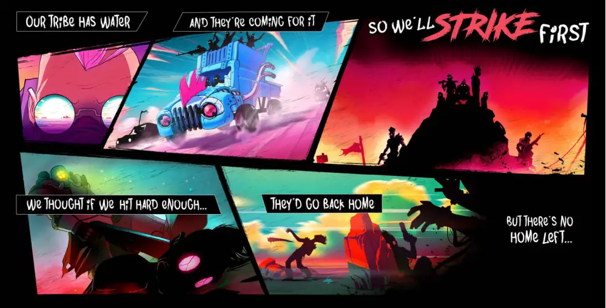
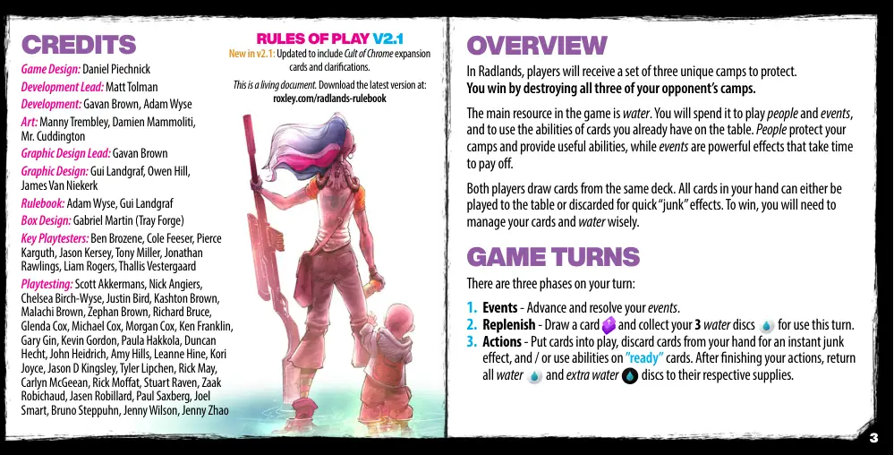
📝 第 3 页 AI 机翻对照（点击展开）
概述
在《荒野之地》(Radlands)中，每位玩家将获得三个独特的营地需要保护。
通过摧毁对手的所有三个营地来获胜。
游戏中的主要资源是水。你将花费水来玩人物和事件卡，
并使用你已经放在桌面上的卡牌的能力。人物保护你的
营地并提供有用的能力，而事件则是强大的效果，需要时间
才能生效。
两位玩家从同一个牌库抽牌。你手中的所有卡牌都可以
被放到桌面上或被弃置以获得快速的"废品"效果。要获胜，
你需要明智地管理你的卡牌和水。
游戏回合
你的回合有三个阶段：
- 事件 - 推进并解决你的事件。
2. 补充 - 抽一张牌
并收集你的3个水指示物
供本回合使用。
- 行动 - 将卡牌放入游戏中，从手牌中弃置卡牌以获得即时废品
效果，和/或使用"就绪"卡牌上的能力。完成行动后，
将所有水
和额外水
指示物归还到各自的供应区。
制作人员
游戏设计：Daniel Piechnick
开发主管：Matt Tolman
开发：Gavan Brown, Adam Wyse
美术：Manny Trembley, Damien Mammoliti,
Mr. Cuddington
平面设计主管：Gavan Brown
平面设计：Gui Landgraf, Owen Hill,
James Van Niekerk
规则书：Adam Wyse, Gui Landgraf
盒装设计：Gabriel Martin (Tray Forge)
主要测试玩家：Ben Brozene, Cole Feeser, Pierce
Karguth, Jason Kersey, Tony Miller, Jonathan
Rawlings, Liam Rogers, Thallis Vestergaard
测试玩家：Scott Akkermans, Nick Angiers,
Chelsea Birch-Wyse, Justin Bird, Kashton Brown,
Malachi Brown, Zephan Brown, Richard Bruce,
Glenda Cox, Michael Cox, Morgan Cox, Ken Franklin,
Gary Gin, Kevin Gordon, Paula Hakkola, Duncan
Hecht, John Heidrich, Amy Hills, Leanne Hine, Kori
Joyce, Jason D Kingsley, Tyler Lipchen, Rick May,
Carlyn McGeean, Rick Moffat, Stuart Raven, Zaak
Robichaud, Jasen Robillard, Paul Saxberg, Joel
Smart, Bruno Steppuhn, Jenny Wilson, Jenny Zhao
游戏规则 V2.1
V2.1新增内容：已更新以包含"崇拜铬"扩展
卡牌和澄清说明。
这是一份活文档。在以下网址下载最新版本：
roxley.com/radlands-rulebook
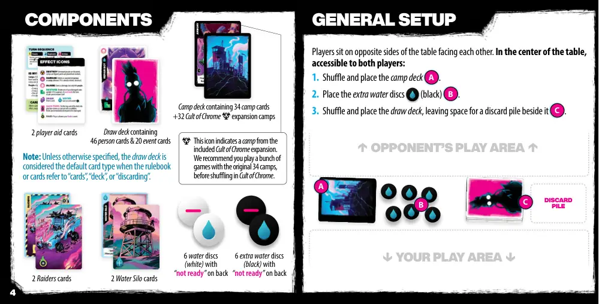
📝 第 4 页 AI 机翻对照（点击展开）
弃牌堆
组件
包含34张营地牌的营地牌库
+32张铬教扩展营地
玩家坐在桌子相对的两侧，面对面。在桌子中央，
两个玩家都能拿到的地方：
- 洗牌并将营地牌库A放置好。
2. 放置额外的水指示物（黑色）B。
- 洗牌并将牌库放置好，在其旁边留出弃牌堆的空间C。
2张掠夺者牌
2张玩家辅助牌
包含46张人物牌和20张事件牌的牌库
6张背面标有"未准备"的水指示物（白色）
6张额外的背面标有"未准备"的水指示物（黑色）
军械库
[ 你的朋克有一个能力
消耗2点并执行
]
通用设置
A
B
C
↑ 对手的游戏区域 ↑
↓ 你的游戏区域 ↓
注意：除非另有说明，当规则书或卡牌提到"牌"、"牌库"或"弃牌"时，牌库被视为默认的卡牌类型。
2个水塔牌
此图标表示来自包含的铬教扩展的营地。
我们建议你在将铬教扩展洗入之前，先用原始的34个营地玩几局游戏。
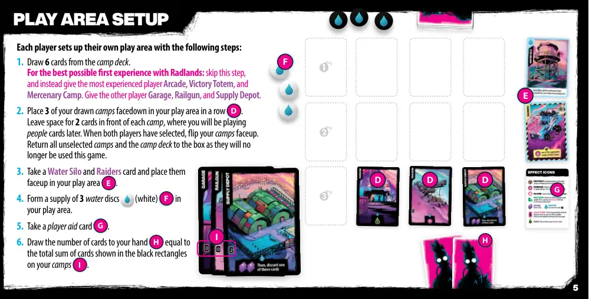
📝 第 5 页 AI 机翻对照（点击展开）
每位玩家按照以下步骤设置自己的游戏区域：
- 从营地牌库中抽取6张牌。
为了获得辐射荒地最佳的初次体验：跳过此步骤，而是给经验最丰富的玩家游乐场、胜利图腾和雇佣兵营地。给另一个玩家车库、轨道炮和补给站。
- 将你抽取的3张营地牌面朝下排成一行放在你的游戏区域D。
在每个营地前留出2张牌的空间，你稍后会在那里放置人物牌。当两位玩家都选择完毕后，将你的营地牌翻面。将所有未选择的营地牌和营地牌库放回盒中，因为它们在本局游戏中不再使用。
3. 拿取一个水塔牌和一张掠夺者牌，将它们面朝上放在你的游戏区域E。
- 在你的游戏区域形成一个由3张水指示物（白色）F组成的补给。
- 拿取一张玩家辅助牌G。
6. 抽取数量等于你营地牌上黑色矩形中显示的卡片总和的牌到手牌H。
游戏区域设置
D
D
D
E
F
G
H
I
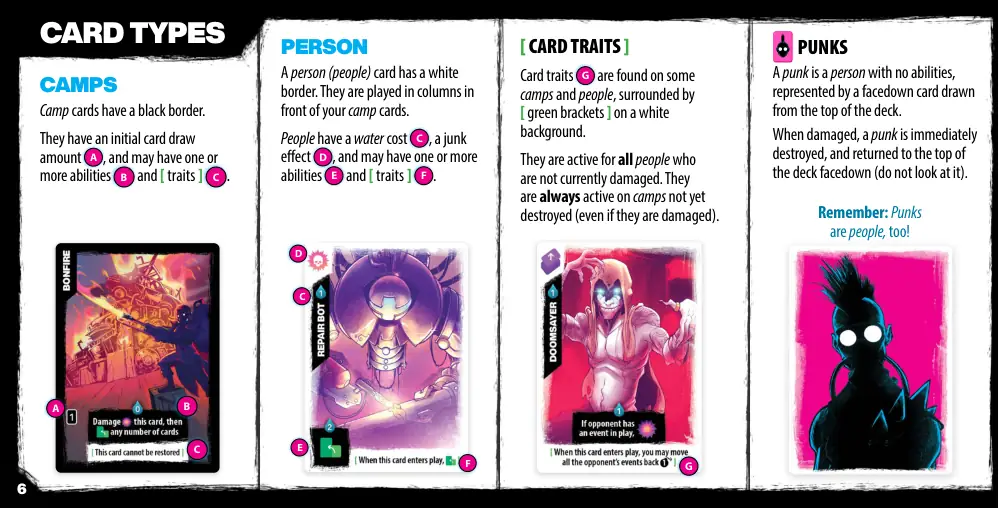
📝 第 6 页 AI 机翻对照（点击展开）
人物
人物卡牌有白色边框。它们被放置在你的营地卡牌前方的列中。
人物有水消耗 C，废品效果 D，并且可能有一个或多个能力 E 和 [ 特征 ] F。
C
D
E
F
卡牌类型
营地
营地卡牌有黑色边框。
它们有初始抽牌量 A，并且可能有一个或多个能力 B 和 [ 特征 ] C。
A
C
小混混
小混混是没有能力的人物，通过从牌库顶抽一张面朝下的牌来表示。
当受到伤害时，小混混会被立即摧毁，并以面朝下的状态返回到牌库顶（不要查看它）。
记住：小混混也是人物！
G
[ 卡牌特征 ]
卡牌特征 G 出现在一些营地和人物上，显示在白色背景的 [ 绿色括号 ] 中。
它们对所有当前未受伤害的人物有效。它们在尚未被摧毁的营地上始终有效（即使它们受到伤害）。
B
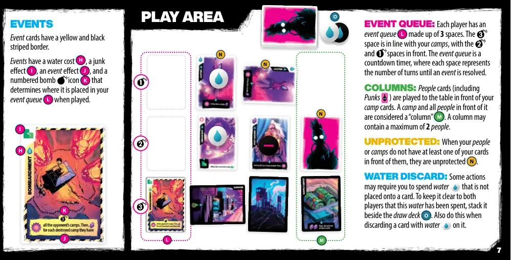
📝 第 7 页 AI 机翻对照（点击展开）
事件
事件卡牌有黄黑条纹边框。
事件有水消耗 H，废品效果 I，事件效果 J，以及一个带编号的炸弹图标 K，该图标决定了它在被打出时放置在你的事件队列 L 中的位置。
K
H
J
I
事件队列：每位玩家都有一个由3个格组成的事件队列 L。该格与你的营地排成一行，和 格在前面。事件队列是一个倒计时器，每个格代表事件被解析前需要经过的回合数。
列：人物卡牌（包括小混混）被放置在你的营地卡牌前方的桌面上。一个营地及其前面的所有人物被视为一个"列" M。一列最多可包含2个人物。
无保护状态：当你的人物或营地前面没有至少一张你的牌时，它们处于无保护状态 N。
水弃牌：某些行动可能要求你花费未放置到卡牌上的水。为了使双方玩家明确这些水已被花费，将其堆放在抽牌堆 O 旁边。当弃掉一张带有水 的卡牌时也这样做。
游戏区域
L
N
N
N
M
O
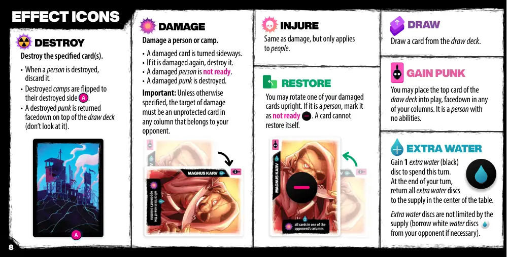
📝 第 8 页 AI 机翻对照（点击展开）
效果图标
销毁
销毁指定的卡牌。
• 当一个人被销毁时，将其弃置。
• 被销毁的营地被翻到其被销毁的一面 A。
• 被销毁的朋克牌被面朝下放回牌库顶部（不要查看它）。
伤害
伤害一个人或一个营地。
• 受伤的卡牌被横向放置。
• 如果它再次受到伤害，则将其销毁。
• 受伤的人未准备就绪。
• 受伤的朋克牌被销毁。
重要：除非另有说明，伤害的目标必须是属于对手的任何列中未受保护的卡牌。
恢复
你可以将一张你受伤的卡牌竖直旋转。如果它是一个人，将其标记为未准备就绪。一张卡牌不能恢复自己。
伤害
与伤害相同，但仅适用于人。
摸牌
从牌库摸一张牌。
获得朋克
你可以将牌库顶部的卡牌面朝下放入游戏，放置在你的任意一列中。它是一个没有能力的人。
额外水源
在本回合获得1个额外水源（黑色）指示物供使用。
在你的回合结束时，将所有额外水源指示物返还到桌子中央的供应区。
额外水源指示物不受供应限制（必要时可向对手借用白色水源指示物）。
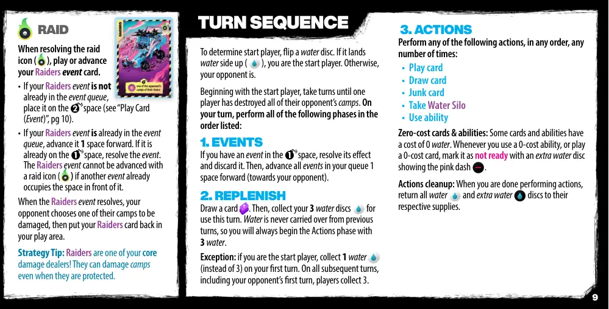
📝 第 9 页 AI 机翻对照（点击展开）
突袭
当解析突袭图标 (
) 时，打出或推进你的突袭事件卡。
• 如果你的突袭事件卡尚未在事件队列中，将其放置在
区域（参见"打出卡牌（事件）"，第10页）。
•如果你的突袭事件卡已在事件队列中，将其向前推进1格。如果它已经在
区域，则解析该事件。
如果突袭事件前方已有其他事件占据，则突袭事件 (
) 无法被推进。
当突袭事件解析时，你的对手选择一个他们的营地受到伤害，然后将你的突袭卡放回你的游戏区域。
策略提示：突袭是你的核心伤害来源之一！即使营地受到保护，它们也能造成伤害。
为确定起始玩家，翻转一个水指示物。如果它正面朝上 (
)，你就是起始玩家。否则，你的对手是。
从起始玩家开始，轮流进行，直到一名玩家摧毁了对手的所有营地。在你的回合，按顺序执行以下所有阶段：
1. 事件
如果你的事件卡在
区域，解析其效果并弃置它。然后，将你队列中的所有事件向前推进1格（朝向你的对手）。
2. 补充
摸一张卡
。然后，收集你的3个水指示物以供本回合使用。水不会从上一回合 carry over，因此你总是在行动阶段开始时拥有3点水。
例外：如果你是起始玩家，在你的第一回合收集1点水（而不是3点）。在所有后续回合中，包括对手的第一回合，玩家收集3点水。
3. 行动
以任意顺序、任意次数执行以下任何行动：
• 打出卡牌
• 摸牌
• 弃牌
• 获取水塔
• 使用能力
零成本卡牌与能力：一些卡牌和能力有0点水的成本。无论何时你使用0成本能力，或打出0成本卡牌，用额外的一个显示粉色破折号
的水指示物将其标记为未准备状态。
行动清理：当你完成执行行动后，将所有水
和额外水
指示物归还到各自的供应区。
回合顺序
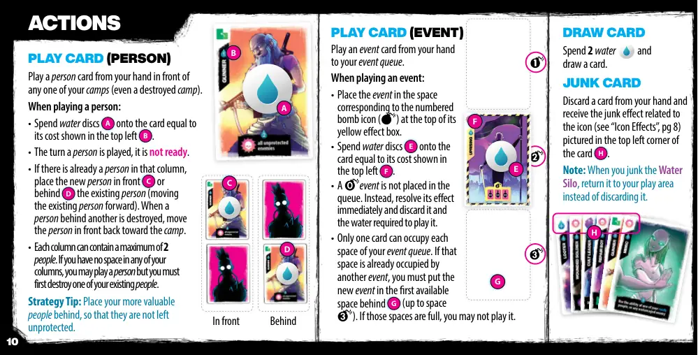
📝 第 10 页 AI 机翻对照（点击展开）
出牌（人物）
从你的手牌中出一张人物牌，放在你任意一个营地（甚至是已被摧毁的营地）前。
当出人物牌时：
• 将水指示物 A 放置在卡牌上，数量等于其左上角所示的费用 B。
• 人物牌被出的那个回合，它未准备就绪。
• 如果该列已有一个人，将新人物放在现有人物的前面 C 或后面 D（将现有人物向前移动）。当后面的人物被摧毁时，将前面的人物移回营地方向。
• 每列最多可包含 2 个人。如果你所有列都没有空间，你可以出一个人，但你必须先摧毁你现有的人物之一。
策略提示：将更有价值的人物放在后面，这样他们就不会无人保护。
前面
行动
摸牌
花费 2 个水
并
摸一张牌。
出牌（事件）
从你的手牌中出一张事件牌
到你的事件队列中。
当出事件牌时：
• 将事件放在其黄色效果框顶部带编号的炸弹图标（
）对应的格中。
• 将水指示物 E 放置在卡牌上，数量等于其左上角所示的费用 F。
• 一个事件不会放入队列。相反，立即解决其效果并弃掉这张牌和出牌所需的水。
• 你的事件队列的每个格只能有一张牌。如果该格已被另一事件占据，你必须将新事件放在第一个可用的后面格 G（最多到格
）。如果这些格已满，你不能出它。
弃牌
从你的手牌中弃掉一张牌，并获得与卡牌左上角图标相关的废品效果（参见"图标效果"，第 8 页）H。
注意：当你弃掉水塔时，将其返回到你的游戏区域而不是弃掉它。
B
A
G
F
E
H
后面
C
D
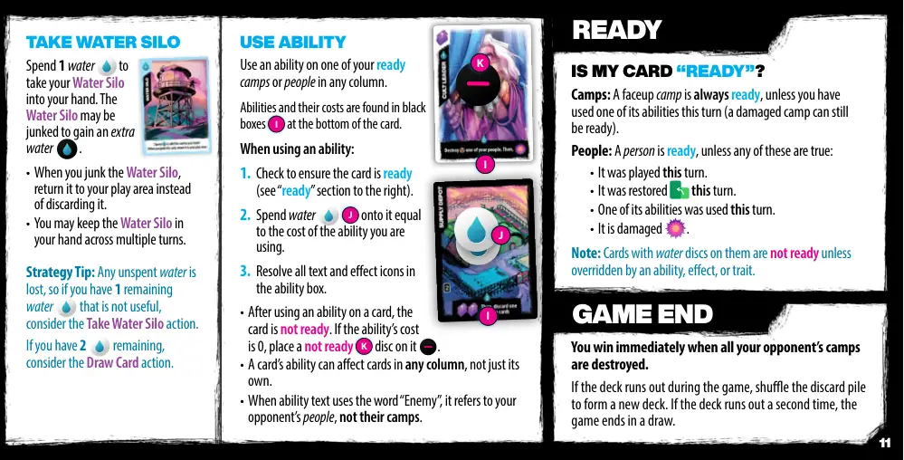
📝 第 11 页 AI 机翻对照（点击展开）
使用能力
在任何列中使用你已准备好的营地或人物上的能力。
能力和其费用可以在卡牌底部的黑色方框 I 中找到。
使用能力时：
1. 检查卡牌是否已准备（参见右侧的"已准备"部分）。
2. 花费等量的水 J 作为能力的费用。
3. 解析能力框中的所有文本和效果图标。
• 在使用卡牌的能力后，该卡牌不再准备。如果能力费用为0，则在其上放置一个未准备 K 指示物。
• 卡牌的能力可以影响任何列中的卡牌，而不仅仅是其所在列的。
• 当能力文本使用"敌人"一词时，指的是对手的人物，而不是他们的营地。
已准备
游戏结束
我的卡牌是否"已准备"？
营地：朝上的营地总是已准备的，除非你本回合使用了它的其中一个能力（受损的营地仍然可以是已准备的）。
人物：人物是已准备的，除非以下任一情况为真：
• 它是本回合打出的。
• 它是本回合恢复的。
• 它的一个能力是本回合使用的。
• 它是受损的。
当对手的所有营地都被摧毁时，你立即获胜。
如果在游戏期间牌库用完，将弃牌堆洗牌形成新牌库。如果牌库第二次用完，游戏以平局结束。
注意：带有水指示物的卡牌不是已准备的，除非被能力、效果或特性覆盖。
I
I
K
J
取得水塔
花费1水 来取得你的水塔到手牌中。水塔可以被报废以获得额外的水 。
• 当你报废水塔时，将其返回到你的游戏区域而不是弃掉。
• 你可以在多个回合中将水塔保留在手牌中。
策略提示：任何未使用的水都会丢失，所以如果你有1剩余水 没有用处，考虑使用取得水塔行动。如果你有2 剩余，考虑摸牌行动。
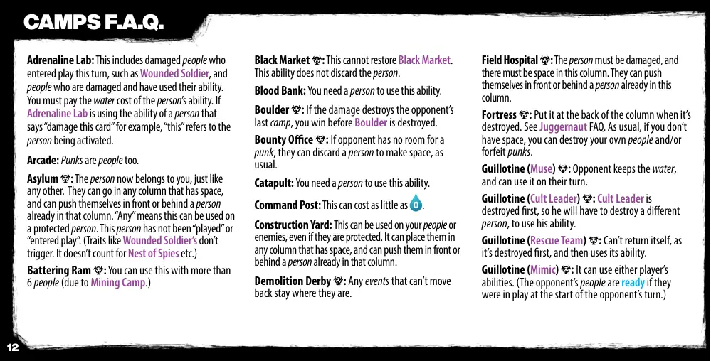
📝 第 12 页 AI 机翻对照（点击展开）
肾上腺素实验室：这包括本回合进入游戏的受伤人员，如受伤士兵，以及受伤并已使用其能力的人员。你必须支付人员能力的水费。如果肾上腺素实验室正在使用一个写着"伤害这张卡"的人员能力，例如，"这张"指的是被激活的人员。
游戏厅：朋克也是人。
收容所：该人员现在属于你，就像其他任何人员一样。他们可以进入任何有空位的列，并且可以把自己推到该列中已有人员的前面或后面。"任何"意味着这可以用于受保护的人员。该人员尚未"打出"或"进入游戏"。（像受伤士兵的特性不会触发。它不计入间谍巢等。）
攻城槌：由于采矿营的存在，你可以使用超过6个人来使用这个能力。
黑市：这不能恢复黑市。这个能力不会弃置人员。
血库：你需要一个人来使用这个能力。
巨石：如果伤害摧毁了对手的最后一个营地，你会在巨石被摧毁之前获胜。
赏金办公室：如果对手没有朋克的位置，他们可以像往常一样弃置一个人来腾出空间。
投石机：你需要一个人来使用这个能力。
指挥中心：这可以花费少至0。
建筑工地：这可以用于你的人或敌人，即使他们受到保护。可以将他们放置在任何有空位的列中，并且可以将他们推到该列中已有人员的前面或后面。
demolition derby：任何无法后退的事件会留在原地。
野战医院：人员必须受伤，并且该列中必须有空间。他们可以把自己推到该列中已有人员的前面或后面。
堡垒：当它被摧毁时，将其放在列的末尾。请参考巨型坦克FAQ。和往常一样，如果你没有空间，你可以摧毁你自己的人员和/或放弃朋克。
断头台（缪斯）：对手保留水，并且可以在他们的回合使用它。
断头台（邪教领袖）：邪教领袖首先被摧毁，因此他必须摧毁一个不同的人员来使用他的能力。
断头台（救援队）：不能返回自身，因为它首先被摧毁，然后使用其能力。
断头台（模仿者）：它可以任一玩家的能力。（如果对手的人员在其回合开始时已在游戏中，则他们处于准备状态。）
营地FAQ
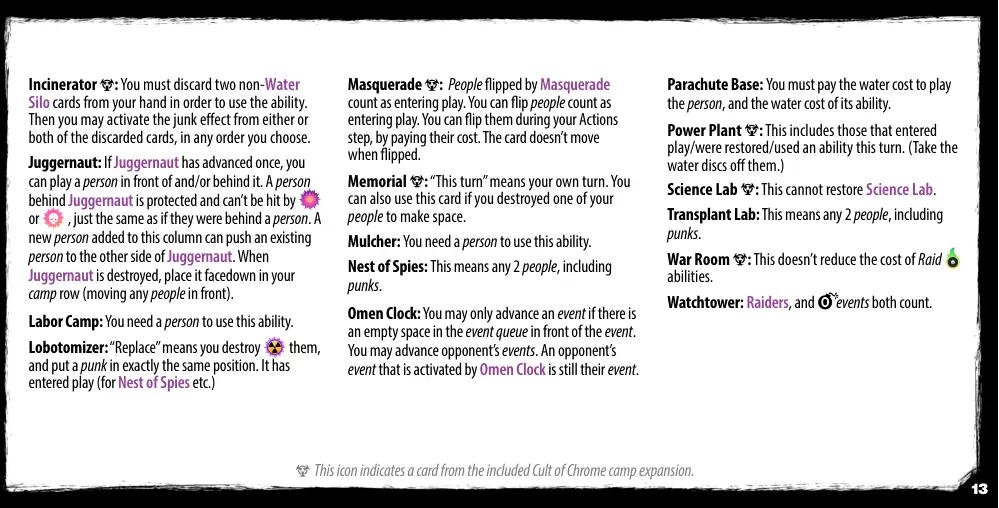
📝 第 13 页 AI 机翻对照（点击展开）
焚化炉：你必须弃掉两张非水槽牌才能使用此能力。然后你可以按任意顺序选择激活被弃掉的一张或两张牌的废品效果。
重装坦克：如果重装坦克已进阶一次，你可以在它前面和/或后面放置一个人。重装坦克后面的人受到保护，不能被或击中，就像他们在一个人的后面一样。添加到这一列的新人可以将现有的人推到重装坦克的另一边。当重装坦克被摧毁时，将它面朝下放置在你的阵营行中（移动前面的人）。
劳动营：你需要一个人才能使用此能力。
脑叶切除器："替换"意味着你摧毁他们，并在完全相同的位置放置一个朋克。它已进入游戏（为间谍巢穴等效果）。
化装舞会：被化装舞会翻转的人算作进入游戏。你可以在你的行动阶段通过支付他们的费用来翻转他们。翻转时卡牌不会移动。
纪念碑："本回合"指的是你自己的回合。如果你为了腾出空间而摧毁了自己的人，你也可以使用这张牌。
粉碎机：你需要一个人才能使用此能力。
间谍巢穴：这指的是任何两个人，包括朋克。
预兆钟：只有当事件队列中该事件前方有空位时，你才能推进一个事件。你可以推进对手的事件。被预兆钟激活的对手事件仍然是他们的事件。
降落基地：你必须支付水费用来打出这个人，以及其能力的水费用。
发电厂：这包括那些在本回合进入游戏/被恢复/使用过能力的牌。（从它们上面取下水指示物。）
科学实验室：这不能恢复科学实验室。
移植实验室：这指的是任何两个人，包括朋克。
作战室：这不降低突袭能力的成本。
瞭望塔：突袭者和事件都算数。
此图标表示来自包含的"铬教阵营"扩展的牌。
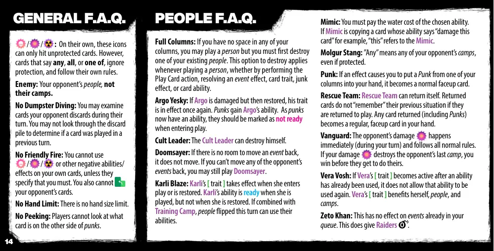
📝 第 14 页 AI 机翻对照（点击展开）
常见问题解答
人物常见问题解答
/
/
: 单独来看，这些图标
只能攻击未受保护的卡牌。然而，
标有"任意"、"全部"或"其中之一"的卡牌，会忽略保护，
并遵循其自身的规则。
敌人：对手的人物，而非他们的营地。
禁止翻找垃圾：你可以检查对手在其回合中弃置的卡牌。你不能查看弃牌堆来确定是否有卡牌在之前的回合中被打出。
禁止友军误伤：你不能使用
/
/
或其他负面能力/效果
在你自己的卡牌上，除非规则指定你必须这样做。你也不能
对手的卡牌。
无手牌上限：没有手牌数量限制。
禁止偷看：玩家不能看朋克卡牌另一面是什么。
已满列：如果你的所有列都没有空间，你可以打出一个人物，但你必须先摧毁你现有的人物之一。这个摧毁选项适用于任何时候打出人物，无论是通过执行"打出卡牌"行动、解决事件效果、卡牌特性、垃圾效果或卡牌能力。
Argo Yesky：如果Argo受到伤害但随后被恢复，他的特性会再次生效。朋克获得Argo的能力。由于朋克现在有了能力，它们进入游戏时应标记为未准备状态。
邪教领袖：邪教领袖可以摧毁自己。
末日预言家：如果没有空间将事件移回，则不移回。如果你无法将对手的任何事件移回，你仍然可以打出末日预言家。
Karli Blaze：当Karli进入游戏或被恢复时，她的[特性]生效。当Karli被打出时，她的能力是准备好的，但当被恢复时则不是。如果与训练营结合，本回合翻转的人物可以使用他们的能力。
模仿者：你必须支付所选能力的水费用。如果模仿者正在复制一张能力写着"伤害此卡"的卡牌，例如，"此"指的是模仿者。
Molgur Stang："任意"指的是对手的任意营地，即使受到保护。
朋克：如果某个效果导致你将一个朋克从你的某一列放入手牌，它会变成一张正常的正面朝上的卡牌。
救援队：救援队可以返回自身。返回的卡牌如果再次进入游戏，不会"记住"它们之前的情况。任何返回的卡牌（包括朋克）都会变成你手中一张普通的正面朝上的卡牌。
先锋：对手的伤害
立即发生（在你的回合期间）并遵循所有正常规则。如果你的伤害
摧毁了对手的最后一个营地，你
在他们行动之前就获胜了。
Vera Vosh：如果Vera的[特性]在某个能力已被使用后才激活，它不会允许该能力再次使用。Vera的[特性]使她自己、人物和营地受益。
Zeto Khan：这对已在队列中的事件没有效果。这确实给掠夺者
。
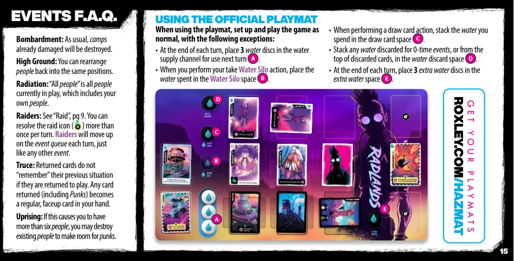
📝 第 15 页 AI 机翻对照（点击展开）
事件 常见问题
使用官方游戏垫
使用游戏垫时，按照以下例外情况正常设置和进行游戏：
• 在每个回合结束时，将3个水指示物放入水供应通道，供下一回合使用 A。
• 当你执行取水塔行动时，将花费的水放入水塔空间 B。
• 当执行抽牌行动时，将你花费的水堆叠在抽牌空间 C。
• 将因0次事件而弃置的水，或从弃牌堆顶部弃置的水，堆叠在水弃置空间 D。
• 在每个回合结束时，在额外水空间 E 中放置3个额外的水指示物。
C
D
E
A
B
获取你的游戏垫
ROXLEY.COM/HAZMAT
轰炸：如常，已受损的营地将被摧毁。
高地：你可以将人员重新排列回相同位置。
辐射："所有人员"是指当前在游戏中的所有人员，包括你自己的人员。
袭击者：参见"袭击"，第9页。你可以在一个回合内多次解决袭击图标(
)。袭击者将在事件队列中前进，就像其他事件一样。
停战：返回的卡牌如果重新投入游戏，不会"记住"它们之前的情况。任何返回的卡牌（包括朋克）都会成为你手中一张普通的、面朝上的卡牌。
起义：如果这导致你拥有超过6个人员，你可以销毁现有人员以为朋克腾出空间。
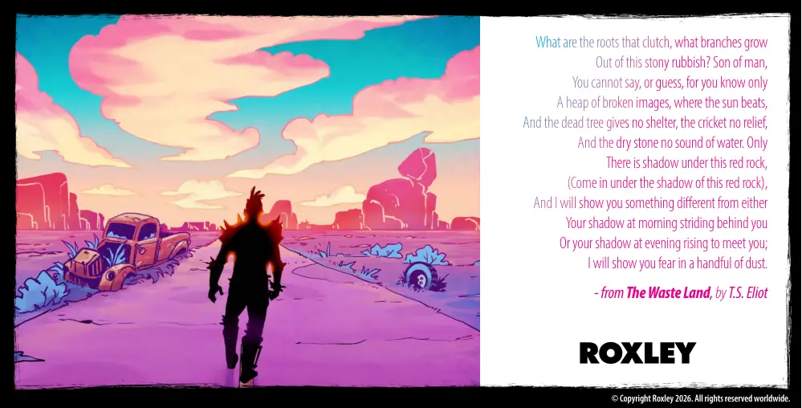
📝 第 16 页 AI 机翻对照（点击展开）
© 版权所有 Roxley 2026。全球所有权利保留。
什么是抓住的根，什么是长出的枝
从这堆石头垃圾里？人子，
你无法说，或猜，因为你只知道
一堆破碎的图像，太阳在那里照耀，
枯树不提供庇护，蟋蟀没有慰藉，
干石没有水声。只有
在这红岩下有阴影，
（到这红岩下的阴影里来），
我将向你展示一些不同于
你早晨跟在你身后的影子
或你傍晚迎面而来的影子；
我将向你展示一把尘土中的恐惧。
- 摘自 T.S. 艾略特的《荒原》